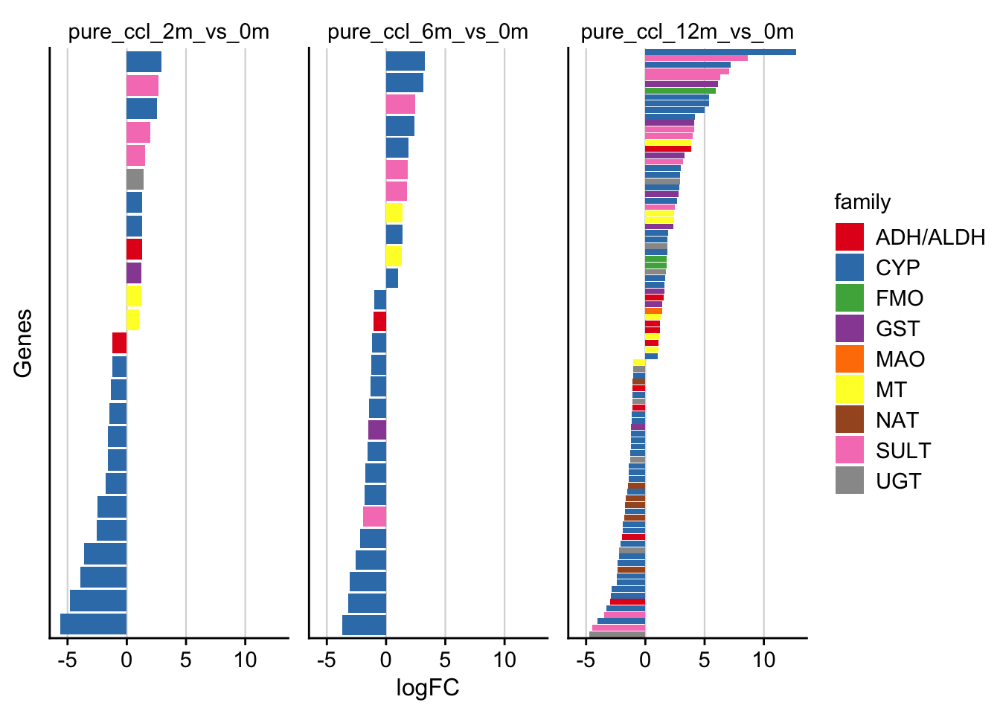

Analysis
Last updated: 2022-10-27
Checks: 7 0
Knit directory: cirrhosis-metabolism/
This reproducible R Markdown analysis was created with workflowr (version 1.7.0). The Checks tab describes the reproducibility checks that were applied when the results were created. The Past versions tab lists the development history.
Great! Since the R Markdown file has been committed to the Git repository, you know the exact version of the code that produced these results.
Great job! The global environment was empty. Objects defined in the global environment can affect the analysis in your R Markdown file in unknown ways. For reproduciblity it’s best to always run the code in an empty environment.
The command set.seed(20221024) was run prior to running
the code in the R Markdown file. Setting a seed ensures that any results
that rely on randomness, e.g. subsampling or permutations, are
reproducible.
Great job! Recording the operating system, R version, and package versions is critical for reproducibility.
Nice! There were no cached chunks for this analysis, so you can be confident that you successfully produced the results during this run.
Great job! Using relative paths to the files within your workflowr project makes it easier to run your code on other machines.
Great! You are using Git for version control. Tracking code development and connecting the code version to the results is critical for reproducibility.
The results in this page were generated with repository version 1c897c7. See the Past versions tab to see a history of the changes made to the R Markdown and HTML files.
Note that you need to be careful to ensure that all relevant files for
the analysis have been committed to Git prior to generating the results
(you can use wflow_publish or
wflow_git_commit). workflowr only checks the R Markdown
file, but you know if there are other scripts or data files that it
depends on. Below is the status of the Git repository when the results
were generated:
Ignored files:
Ignored: .DS_Store
Ignored: .Rhistory
Ignored: .Rproj.user/
Ignored: analysis/.DS_Store
Ignored: data/README.html
Ignored: data/annotation/
Ignored: data/data.zip
Ignored: data/mouse-chronic-ccl4/
Ignored: data/output.zip
Ignored: output/mouse-chronic-ccl4/
Ignored: renv/library/
Ignored: renv/sandbox/
Ignored: renv/staging/
Note that any generated files, e.g. HTML, png, CSS, etc., are not included in this status report because it is ok for generated content to have uncommitted changes.
These are the previous versions of the repository in which changes were
made to the R Markdown (analysis/analysis.Rmd) and HTML
(docs/analysis.html) files. If you’ve configured a remote
Git repository (see ?wflow_git_remote), click on the
hyperlinks in the table below to view the files as they were in that
past version.
| File | Version | Author | Date | Message |
|---|---|---|---|---|
| Rmd | 999847c | christianholland | 2022-10-27 | added initial data analysis |
| html | d388f23 | christianholland | 2022-10-25 | Build site. |
| Rmd | eb87bee | christianholland | 2022-10-25 | Start my new project |
Introduction
This script analyzes the expression of genes involved in the metabolism of xenobiotic substances in one of our previously published mouse model that develops chronic liver disease induced by administration of CCl4 for 2, 6 and 12 months (Holland et al. 2021).
The focus is on the following gene families:
- Phase I
- Cytochrome p450 dependent monooxygenase (CYP)
- Flavin dependent monooxygenases (FMO)
- Monoamine oxidase (MAO)
- Cyclooxgenase (COX)
- Dihydrodioldehydrogenase (Not yet implemented)
- DT-Diaphorase (NQOR)
- Alcohol- and Aldehyddehydrogenase (ADH/ALDH)
- Epoxidhydrolase (Not yet implemented)
- Phase II
- Glutathiontransferase (GST)
- UDP-glucuronosyltransferase (UGT)
- Sulfotransferase (SULT)
- Acetyltransferase (NAT)
- Methyltransferase (MT)
Libraries and sources
These libraries and sources are used for this analysis.
# data wrangling
library(tidyverse)
# statistics
library(fgsea)
# plotting
library(cowplot)
library(lemon)
library(tidytext)
library(UpSetR)
library(plotly)
library(scales)
# colors
library(AachenColorPalette)
library(RColorBrewer)
# display tables
library(DT)
library(knitr)
# development helpers
library(here)
library(devtools)
# other
library(htmltools)
base_url <- "https://raw.githubusercontent.com/saezlab/liver-disease-atlas"
source_url(file.path(base_url, "master", "code", "utils-plots.R"))
source_url(file.path(base_url, "master", "code", "utils-utils.R"))Definition of global variables that are used throughout this analysis.
Metabolic genes
Annotate metabolic genes
This table displays all genes that are considered in this analysis
# extract all possible genes
genes <- readRDS(here(data_path, "count_matrix.rds")) |>
rownames_to_column("gene") |>
as_tibble() |>
select(gene)
genes <- genes |>
mutate(family = case_when(
str_detect(gene, "^Cyp") ~ "CYP",
str_detect(gene, "^Ugt") ~ "UGT",
str_detect(gene, "^Fmo") ~ "FMO",
str_detect(gene, "^Mao") ~ "MAO",
str_detect(gene, "^Cox") ~ "COX",
str_detect(gene, "^Adh|Aldh") ~ "ADH/ALDH",
str_detect(gene, "^Sult") ~ "SULT",
str_detect(gene, "^Nat") ~ "NAT",
str_detect(gene, "^Mt") ~ "MT",
str_detect(gene, "^Nqor") ~ "NQOR",
str_detect(gene, "^Gst") ~ "GST",
# str_detect(gene, "^xxx") ~ "Epoxidhydrolasen",
# str_detect(gene, "^xxx") ~ "Dihydrodioldehydrogenase",
TRUE ~ NA_character_
)) |>
drop_na(family) |>
mutate(phase = case_when(
family %in% c("CYP", "FMO", "MAO", "COX", "NQOR", "ADH/ALDH") ~ "Phase I",
family %in% c("GST", "UGT", "SULT", "NAT", "MT") ~ "Phase II",
)) |>
mutate(
family = as_factor(family),
phase = as_factor(phase)
) |>
select(phase, family, gene)
saveRDS(genes, here(output_path, "metabolic_genes.rds"))
datatable(genes)Number of metabolic genes

Fraction of differentially expressed metabolic genes
| phase | family | size | n | fraction |
|---|---|---|---|---|
| Phase I | MAO | 2 | 1 | 0.5000000 |
| Phase I | FMO | 8 | 3 | 0.3750000 |
| Phase I | CYP | 126 | 46 | 0.3650794 |
| Phase II | UGT | 22 | 8 | 0.3636364 |
| Phase II | GST | 23 | 8 | 0.3478261 |
| Phase II | NAT | 18 | 6 | 0.3333333 |
| Phase II | SULT | 27 | 9 | 0.3333333 |
| Phase I | ADH/ALDH | 29 | 9 | 0.3103448 |
| Phase II | MT | 72 | 7 | 0.0972222 |
Differentially expressed metabolic families arcoss time points

Enrichment analysis

Trajectories of metabolic genes
Only metabolic genes that are differentially expressed in at least one timepoint are considered.
Metabolic genes with pericentral location
The list of pericentral genes is taken from one of our previous studies (Ghallab et al. 2019).
Overlap of metabolic and pericentral genes

Trajectories of metabolic genes with pericentral location
Only genes that are differentially expressed in at least one timepoint are considered.
References
R version 4.2.1 (2022-06-23)
Platform: x86_64-apple-darwin17.0 (64-bit)
Running under: macOS Big Sur ... 10.16
Matrix products: default
BLAS: /Library/Frameworks/R.framework/Versions/4.2/Resources/lib/libRblas.0.dylib
LAPACK: /Library/Frameworks/R.framework/Versions/4.2/Resources/lib/libRlapack.dylib
locale:
[1] de_DE.UTF-8/de_DE.UTF-8/de_DE.UTF-8/C/de_DE.UTF-8/de_DE.UTF-8
attached base packages:
[1] stats graphics grDevices datasets utils methods base
other attached packages:
[1] htmltools_0.5.3 devtools_2.4.5.9000 usethis_2.1.6
[4] here_1.0.1 knitr_1.40 DT_0.26
[7] RColorBrewer_1.1-3 AachenColorPalette_1.1.3 scales_1.2.1
[10] plotly_4.10.0 UpSetR_1.4.0 tidytext_0.3.4
[13] lemon_0.4.5 cowplot_1.1.1 fgsea_1.22.0
[16] forcats_0.5.2 stringr_1.4.1 dplyr_1.0.10
[19] purrr_0.3.5 readr_2.1.3 tidyr_1.2.1
[22] tibble_3.1.8 ggplot2_3.3.6 tidyverse_1.3.2
[25] workflowr_1.7.0
loaded via a namespace (and not attached):
[1] googledrive_2.0.0 colorspace_2.0-3 ellipsis_0.3.2
[4] rprojroot_2.0.3 fs_1.5.2 rstudioapi_0.14
[7] farver_2.1.1 remotes_2.4.2 SnowballC_0.7.0
[10] fansi_1.0.3 lubridate_1.8.0 xml2_1.3.3
[13] codetools_0.2-18 cachem_1.0.6 pkgload_1.3.0
[16] jsonlite_1.8.3 broom_1.0.1 dbplyr_2.2.1
[19] shiny_1.7.2 compiler_4.2.1 httr_1.4.4
[22] backports_1.4.1 assertthat_0.2.1 Matrix_1.4-1
[25] fastmap_1.1.0 lazyeval_0.2.2 gargle_1.2.1
[28] cli_3.4.1 later_1.3.0 prettyunits_1.1.1
[31] tools_4.2.1 gtable_0.3.1 glue_1.6.2
[34] fastmatch_1.1-3 Rcpp_1.0.9 cellranger_1.1.0
[37] jquerylib_0.1.4 vctrs_0.5.0 crosstalk_1.2.0
[40] xfun_0.34 ps_1.7.1 rvest_1.0.3
[43] mime_0.12 miniUI_0.1.1.1 lifecycle_1.0.3
[46] renv_0.16.0 googlesheets4_1.0.1 getPass_0.2-2
[49] hms_1.1.2 promises_1.2.0.1 parallel_4.2.1
[52] curl_4.3.3 yaml_2.3.6 memoise_2.0.1
[55] gridExtra_2.3 sass_0.4.2 stringi_1.7.8
[58] highr_0.9 tokenizers_0.2.3 pkgbuild_1.3.1
[61] BiocParallel_1.30.4 rlang_1.0.6 pkgconfig_2.0.3
[64] evaluate_0.17 lattice_0.20-45 labeling_0.4.2
[67] htmlwidgets_1.5.4 processx_3.7.0 tidyselect_1.2.0
[70] plyr_1.8.7 magrittr_2.0.3 R6_2.5.1
[73] profvis_0.3.7 generics_0.1.3 DBI_1.1.3
[76] pillar_1.8.1 haven_2.5.1 whisker_0.4
[79] withr_2.5.0 janeaustenr_1.0.0 modelr_0.1.9
[82] crayon_1.5.2 utf8_1.2.2 urlchecker_1.0.1
[85] tzdb_0.3.0 rmarkdown_2.17 grid_4.2.1
[88] readxl_1.4.1 data.table_1.14.4 callr_3.7.2
[91] git2r_0.30.1 reprex_2.0.2 digest_0.6.30
[94] xtable_1.8-4 httpuv_1.6.6 munsell_0.5.0
[97] viridisLite_0.4.1 bslib_0.4.0 sessioninfo_1.2.2